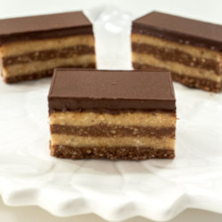

BAJADERA

This simple cookie is the quintessential addition to any sitni kolači tray and is a family favorite around here. In fact, rarely do we have a slava or other special occasion where this recipe isn’t used to prepare a simple yet super delicious cookie.
Ingredients:
- 2 sticks (226 g) unsalted butter
- 2/3 cup (200 ml) water
- 1 cup (200 g) sugar
- 1 tablespoon vanilla sugar
- 3 cups (300 g) ground walnuts (or other kind of nut)
- 4 cups (400 g) Plazma tea biscuits/cookies
- 1/2 teaspoon (3 ml) vanilla extract
- 2 bars (200 g) dark chocolate
- 3 tablespoons (45 ml) oil
Steps:
- In a medium saucepan heat the butter, water, sugar, and vanilla sugar on medium heat until the butter is melted. Once the mixture begins to boil, turn off the heat and remove the saucepan from the burner.
- In a large mixing bowl, combine the walnuts, Plazma Keks, and vanilla extract, and lastly pour in the hot liquid. Mix all the ingredients together very well with a spatula.
- Divide the mixture in half. Melt 1 bar of chocolate in the microwave or on the stove and add the melted chocolate to one half of the mixture. Mix well to incorporate the chocolate into the batter.
- Grease a baking pan very lightly with oil or baking spray. Pour the chocolate half of the mixture into the pan and use a spatula into an even layer. Next, pour the other half (non-chocolate half) on top and spread into an even layer.
- In a small saucepan or in the microwave, melt the remaining chocolate with the oil and pour across the top of the cookie batter in an even layer. Shake the pan lightly side to side and forward and back to spread the chocolate evenly.
- When set, cut into desired shapes and serve. Store leftovers in the refrigerator.